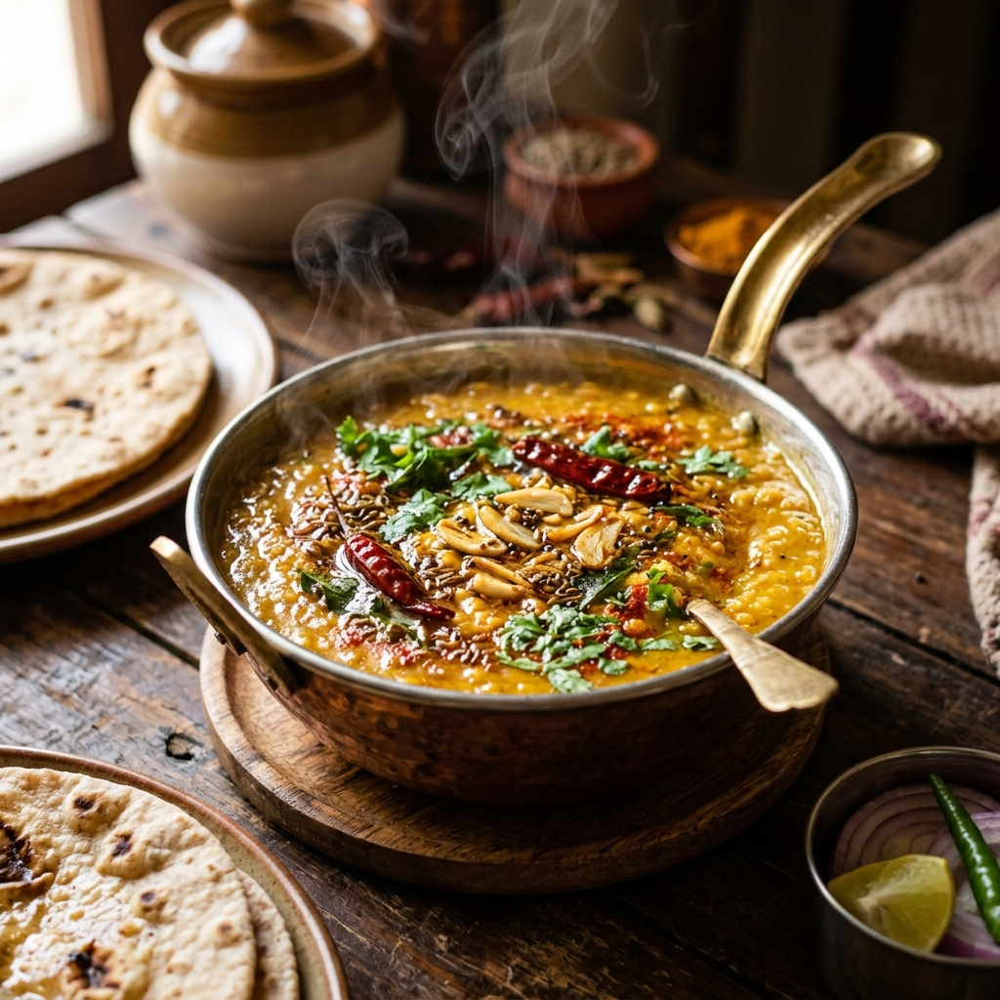

📝 Ingredients
- 1/2 cup toor dal (split pigeon peas)
- 1/4 cup moong dal (yellow split lentils)
- 1 onion, finely chopped
- 1 tomato, chopped
- 1 tsp cumin seeds, 2 garlic cloves (minced)
- 1/4 tsp turmeric, 1/2 tsp chili powder
- 2 tsp ghee or oil
- Salt and coriander leaves for garnish
👩🍳 Instructions
- Wash and pressure-cook dals with turmeric and 2 cups water for 3–4 whistles.
- Heat ghee in a pan, add cumin, then garlic. Sauté for 30 seconds.
- Add onion and sauté until golden. Then add tomatoes and cook until soft.
- Add chili powder and cooked dal. Mix well and simmer for 5–7 minutes.
- Garnish with coriander. Serve hot with rice or roti.
⏱️ Details
- Prep Time: 10 mins
- Cook Time: 20 mins
- Servings: 2–3